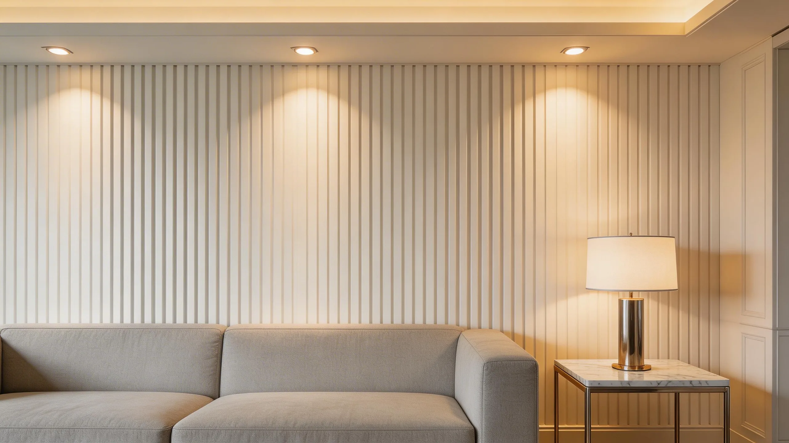

Fluted Wall Panels: Profiles, Uses and Distributor Buying Guide
How distributors can position fluted wall panels by customer, application, finish, accessories, and price tier.

Fluted wall panels are decorative profile panels used to create vertical rhythm and feature-wall depth. For distributors they work best as a clearly positioned design category—with coordinated colors, trims, display samples and applications—rather than as another isolated panel SKU.
Choose a channel position
Fluted panels can support premium residential upgrades, hotel features, offices, showrooms and retail interiors. Define whether the range is a volume wall solution, an accent product or a higher-margin design line.
Build a sellable collection
A focused launch usually needs a manageable color family, representative full-profile samples, matching trims and installation guidance. Too many disconnected colors can increase sample cost without helping buyers understand the range.
Plan combination sales
Fluted panels can sit alongside PVC, WPC, UV boards and flooring in a room-material package. Luvie's one-stop coordination and mixed-container capability help distributors test a category while keeping the order commercially structured.
Buyer checklist
- Target customer and price tier
- Profile width, depth and joint direction
- Core color and surface finish
- Matching trims and corner details
- Display sample and mixed-container plan
Questions buyers ask
Are fluted and WPC panels the same?
Fluted describes the profile; material and intended use must be confirmed for each model.
Can colors be customized?
Luvie supports customization, but feasibility, reference, MOQ and timing are order-specific.
What should a distributor display?
Show the full profile, joint, at least one corner or trim, and a realistic installed area.
Match the product to your market before requesting a quote.
Send your country, application, preferred product, size and estimated quantity. Luvie will respond within 24 hours and organize the next product or sample discussion.
WhatsApp +30 6947135317